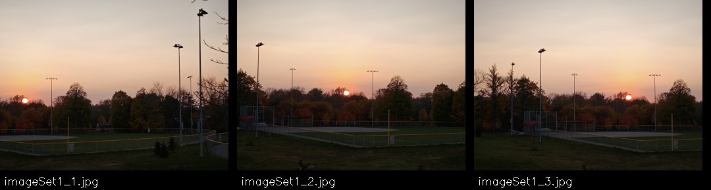
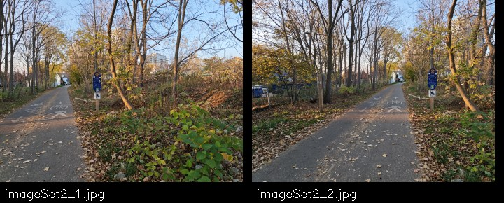
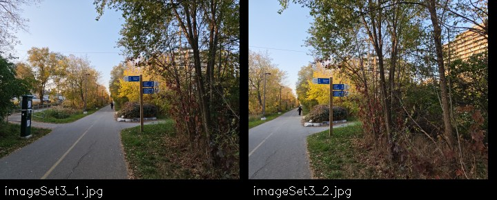
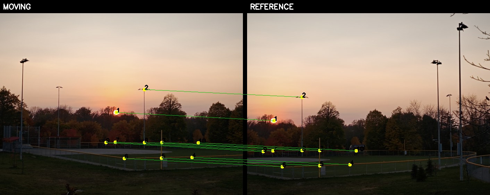
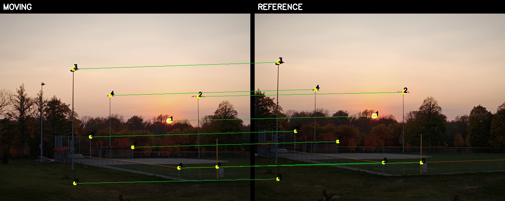
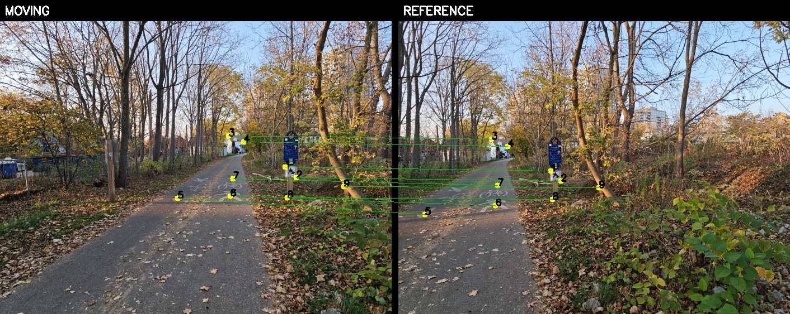
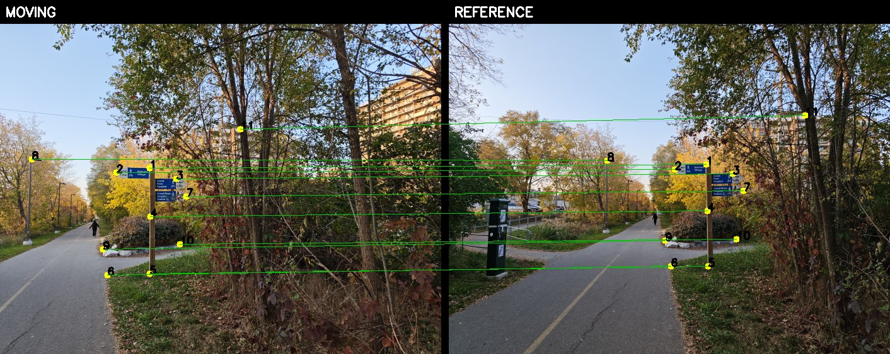

Part 1 · Manual correspondences
Image warping & mosaicing
Clicked correspondences define projective transforms. Inverse warping resamples each photograph, and spatial feather weights soften the overlap between views.
A.1 · Source photographs
Three overlapping image sequences
I captured all three multi-view sets in quick succession while rotating the camera around an approximately fixed center of projection, with substantial overlap between neighboring views. Nearby objects, residual camera translation, and scene motion can still violate the projective model and create parallax or ghosting.






A.2 · Least-squares estimation
Recovering a homography from clicked points
For each neighboring pair, I click corresponding scene points in the moving and reference images. In homogeneous coordinates, each correspondence satisfies pi′ ∝ Hpi. Four point pairs determine the eight free parameters, but I use more matches and solve an overdetermined system by least squares. Point coordinates are normalized before solving for better numerical conditioning, then the homography is denormalized.
For one normalized point pair (xi, yi) → (ui, vi)
Ai =
×
=
Stacking the rows for all point pairs gives A h = b. We fix h33 = 1, solve the overdetermined system by least squares, then denormalize:
H = Tdestination−1 Hnormalized Tsource








Numerical example · Set 1, pair 1
The full normalized system contains 20 rows from 10 clicked point pairs. h is ordered as [h11, h12, h13, h21, h22, h23, h31, h32]T, with h33 = 1.
| Equation | h11 | h12 | h13 | h21 | h22 | h23 | h31 | h32 | b |
|---|---|---|---|---|---|---|---|---|---|
| u1 | -1.263647 | -1.113525 | 1.000000 | 0 | 0 | 0 | -1.599081 | -1.409109 | -1.265449 |
| v1 | 0 | 0 | 0 | -1.263647 | -1.113525 | 1.000000 | -1.388193 | -1.223275 | -1.098561 |
| u2 | -0.083077 | -2.075471 | 1.000000 | 0 | 0 | 0 | -0.007475 | -0.186740 | -0.089975 |
| v2 | 0 | 0 | 0 | -0.083077 | -2.075471 | 1.000000 | -0.173247 | -4.328143 | -2.085379 |
| u3 | 0.645670 | 0.154494 | 1.000000 | 0 | 0 | 0 | -0.419775 | -0.100443 | 0.650139 |
| v3 | 0 | 0 | 0 | 0.645670 | 0.154494 | 1.000000 | -0.096511 | -0.023093 | 0.149474 |
| u4 | 1.913689 | 0.781217 | 1.000000 | 0 | 0 | 0 | -3.660286 | -1.494222 | 1.912686 |
| v4 | 0 | 0 | 0 | 1.913689 | 0.781217 | 1.000000 | -1.424679 | -0.581590 | 0.744467 |
| u5 | 0.631095 | 0.810367 | 1.000000 | 0 | 0 | 0 | -0.410299 | -0.526851 | 0.650139 |
| v5 | 0 | 0 | 0 | 0.631095 | 0.810367 | 1.000000 | -0.497305 | -0.638571 | 0.788003 |
| u6 | -0.928424 | 0.824941 | 1.000000 | 0 | 0 | 0 | -0.851513 | 0.756604 | -0.917160 |
| v6 | 0 | 0 | 0 | -0.928424 | 0.824941 | 1.000000 | 0.772021 | -0.685971 | 0.831539 |
| u7 | -1.307372 | 0.139919 | 1.000000 | 0 | 0 | 0 | -1.711330 | 0.183152 | -1.308985 |
| v7 | 0 | 0 | 0 | -1.307372 | 0.139919 | 1.000000 | 0.214391 | -0.022945 | 0.163986 |
| u8 | -0.083077 | 0.154494 | 1.000000 | 0 | 0 | 0 | -0.007475 | 0.013901 | -0.089975 |
| v8 | 0 | 0 | 0 | -0.083077 | 0.154494 | 1.000000 | 0.012418 | -0.023093 | 0.149474 |
| u9 | -1.700895 | 0.154494 | 1.000000 | 0 | 0 | 0 | -2.917583 | 0.265008 | -1.715322 |
| v9 | 0 | 0 | 0 | -1.700895 | 0.154494 | 1.000000 | 0.328290 | -0.029819 | 0.193010 |
| u10 | 2.176038 | 0.169069 | 1.000000 | 0 | 0 | 0 | -4.730494 | -0.367540 | 2.173902 |
| v10 | 0 | 0 | 0 | 2.176038 | 0.169069 | 1.000000 | -0.356840 | -0.027725 | 0.163986 |
Recovered denormalized homography
H = [ 1.073469 0.020217 -1673.738979]
[ 0.007044 1.090269 57.009333]
[ 0.000009 0.000016 1.000000]A.3 · Inverse warping
Rectifying a planar sign panel
I click the four outer corners of the same flat sign panel in each photograph and map them to an 800 × 320 output rectangle. For every destination pixel, inverse warping applies H-1 to find its source coordinate, avoiding the holes produced by forward splatting. The nearest-neighbor method rounds to one source pixel; bilinear interpolation takes a weighted average of the four surrounding pixels.
xsource ∝ H−1xdestination


Nearest neighbor is faster in these single-run measurements, while bilinear interpolation produces smoother edges and less pixelation. On image 1 the measured times were 0.075 s and 0.202 s; on image 2, 0.033 s and 0.101 s, respectively. These timings depend on the machine and run conditions. The comparisons use the same 800 × 320 target size.
A.4 · Feather blending
Three manually registered mosaics
Each image is mapped into a shared panorama coordinate system. A per-pixel feather weight increases with distance from the source image border. I warp both the image and its weight map, accumulate weighted pixel values, then divide by the accumulated weights:
M(x,y) =
∑i=1N wi(x,y)
Iiwarped(x,y)
∑i=1N wi(x,y)
when ∑i=1N wi(x,y) > 0
This gradually transitions between views instead of letting one image abruptly overwrite another. It reduces border seams, but cannot resolve scene motion or parallax: nearby trees and the sign in Sets 2 and 3 remain slightly doubled because their apparent positions change with viewpoint.